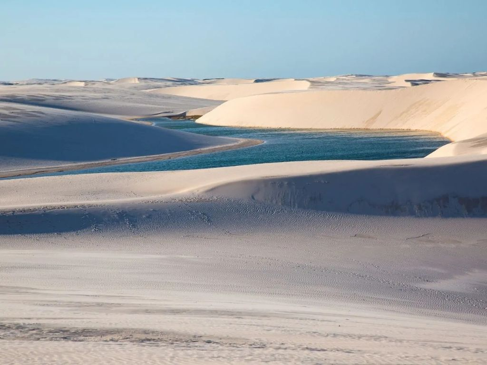

O Maranhão é um estado localizado na região Nordeste do Brasil, conhecido por sua grande diversidade cultural, histórica e natural. Sua capital é São Luís, famosa pelo centro histórico com construções coloniais e pelos tradicionais azulejos portugueses. O estado abriga atrações naturais impressionantes, como os Lençóis Maranhenses, um dos destinos turísticos mais conhecidos do país. A economia maranhense envolve atividades como agricultura, pecuária, extrativismo e turismo. Além disso, o Maranhão possui rica cultura popular, marcada pelo bumba meu boi, pelas festas tradicionais e pela forte influência indígena, africana e portuguesa.
